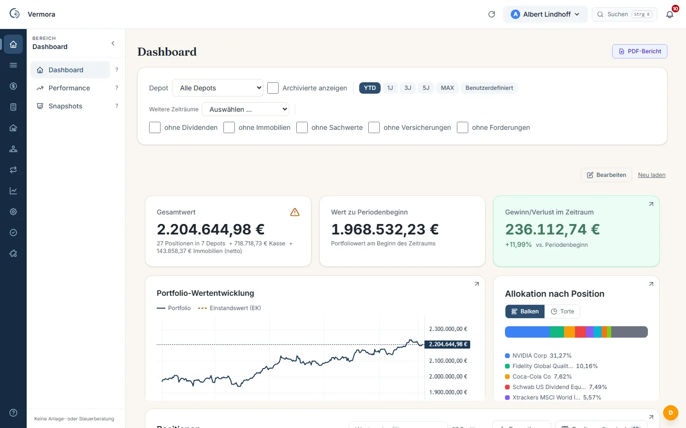
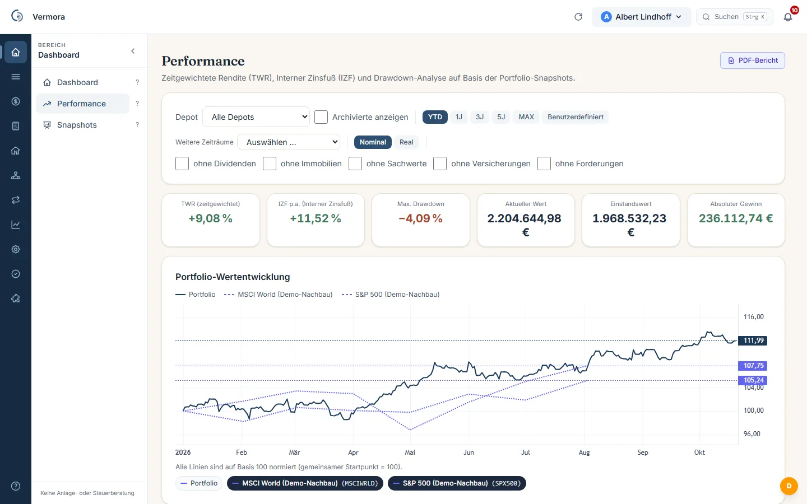
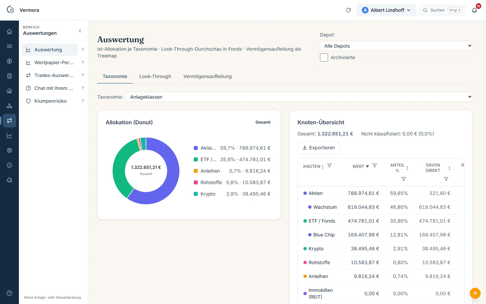
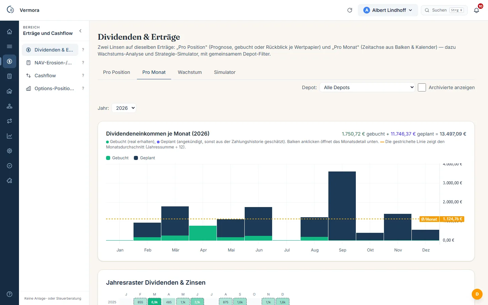
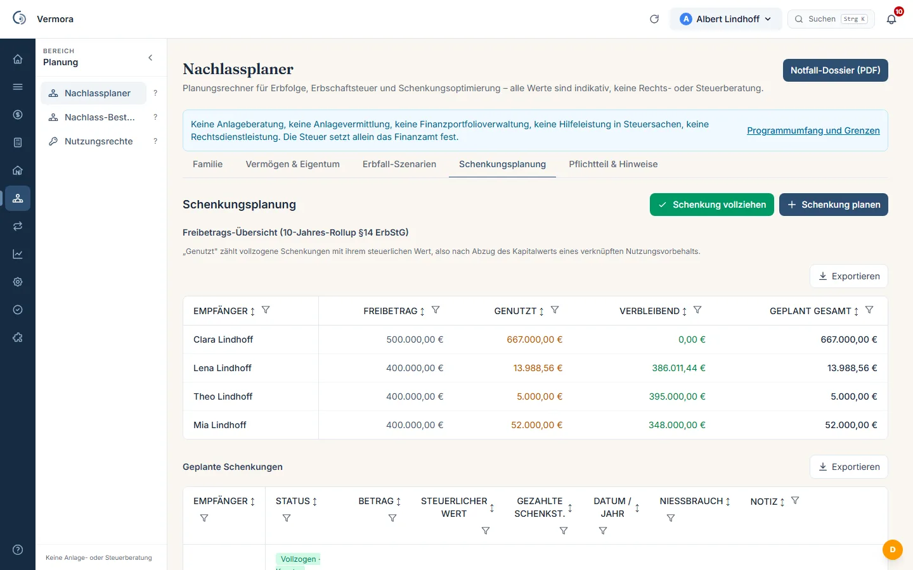
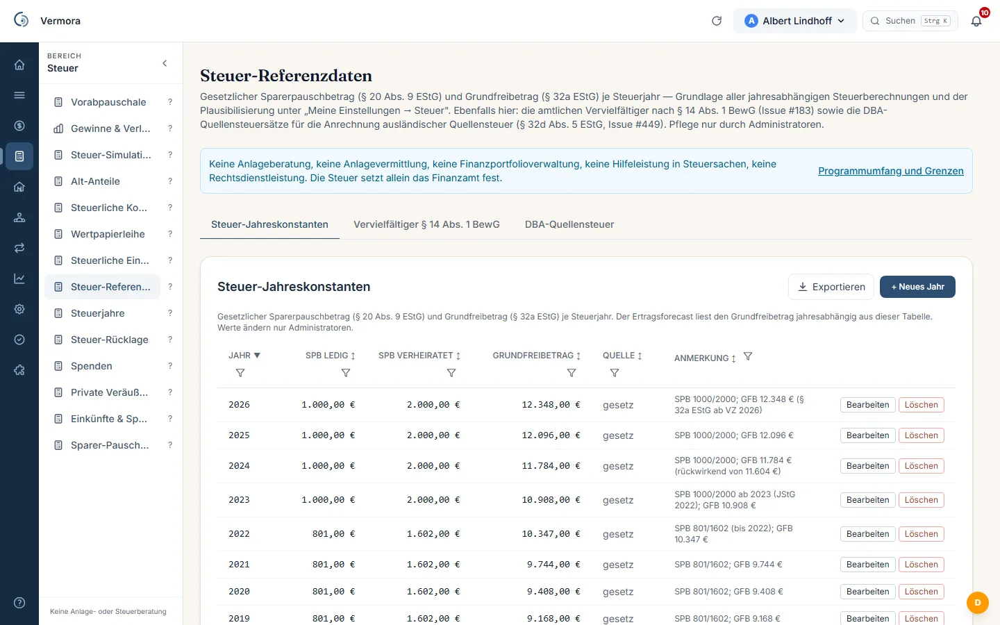
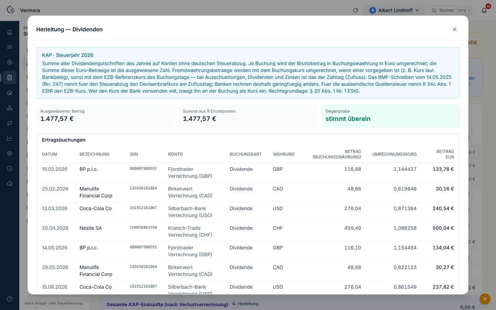
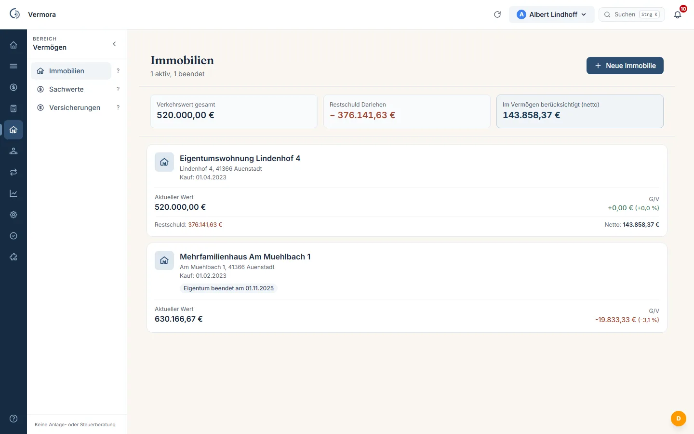
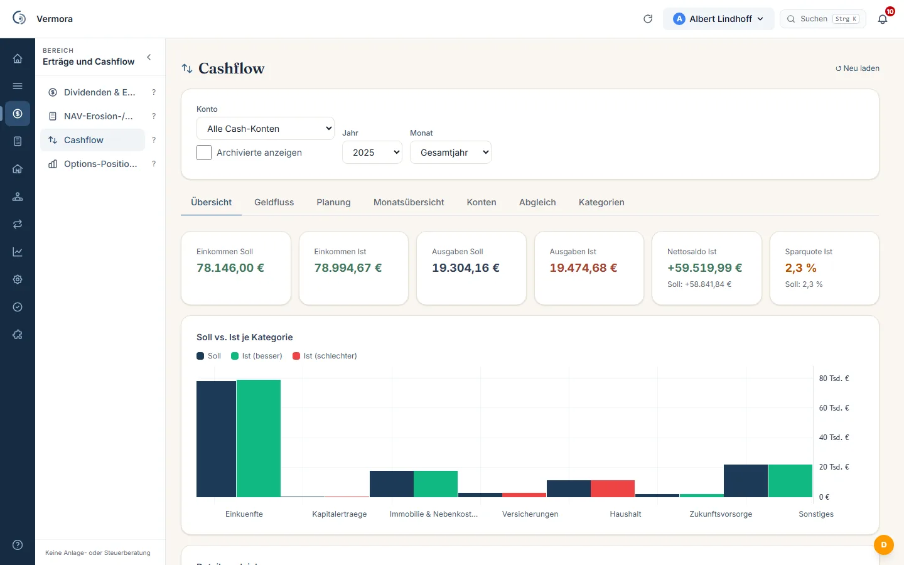

Depots & Konten
Mehrere Broker nebeneinander, FIFO-Kaufposten je Papier, Kontostände und Zinsen in derselben Übersicht.
Läuft auf Ihrem Rechner, Ihrer Hardware oder Ihrem gemieteten Server
Depots, Konten, Immobilien und Nachfolge — an einer Stelle erfasst, über Jahre ausgewertet und bis zur Steuerformel durchgerechnet. Keine Cloud, die Sie nicht selbst betreiben.
So sieht es aus









Die Bilder zeigen die Anwendung mit erfundenen Beispieldaten und dem echten Wortlaut der Oberfläche. Personen- und Kontonamen sind erfunden; genannte Wertpapiere gehören zu diesen Beispieldaten und sind keine Auswahl durch Vermora.
Warum es das gibt
Angefangen hat es bei mir mit Tabellenkalkulation. Ich wollte wissen, was da ist und wie es sich entwickelt, und habe mir die Übersicht selbst gebaut: Auswertungen in Tabellen, daneben ein Haushaltsbuch, später die Fortschreibung von Darlehen mit Zins und Tilgung. Jede Tabelle war für sich übersichtlich. Zusammen ergaben sie kein Bild.
Dann kam ein Depot in Fremdwährung bei einer Bank ohne deutschen Steuerabzug dazu. Jeden Kauf, jeden Verkauf und jede Dividende habe ich selbst aufbereitet, zum Umrechnungskurs des jeweiligen Tages, Jahr für Jahr. Für die Übersicht über die Wertpapiere habe ich fremde Programme genutzt; was außerhalb des Depots lag, kannten sie nicht. Am Ende wollte ich auch Erbschaften durchrechnen können, mit denselben Zahlen und nicht mit einer weiteren Tabelle.
Jede dieser Quellen ist für sich genommen richtig. Nur beantwortet keine von ihnen die Fragen, die man tatsächlich hat: Was ist das Vermögen insgesamt wert — heute, nicht zum letzten Jahresabschluss? Wie viel davon hängt an einem einzigen Wert? Was ist im vergangenen Jahr tatsächlich hereingekommen, über alle Konten und Depots hinweg? Und was würde davon übrig bleiben, wenn es einmal an die nächste Generation geht?
Am deutlichsten wird die Lücke beim Depot ohne deutschen Steuerabzug. Eine inländische Bank führt still mit, was am Jahresende in die Steuerunterlagen gehört. Ein Broker ohne diesen Einbehalt tut das nicht — dort bleibt die Aufstellung bei Ihnen: jede Bewegung, jeder Umrechnungskurs, jedes Jahr. Wer das einmal von Hand gemacht hat, weiß, wie lange eine Tabelle dafür trägt.
Genau diese eine Stelle fehlte mir. Vermora ist mein Versuch, sie zu bauen: für den eigenen Haushalt, auf eigener Hardware, mit offengelegtem Rechenweg.
Es fehlt nicht an Zahlen. Es fehlt der Zusammenhang.
Vermora ist ein Kunstwort aus Vermögen und Aura. Unter mehreren Namen, die zur Wahl standen, war es mir der liebste: Das Wort „Vermögen“ bleibt erkennbar, und die weiche Endung nimmt einem eher trockenen Thema etwas von seiner Schwere. Der Satz „Ein Vermögen. Ein Wahrheitsort.“ sagt, worum es geht: eine Stelle, an der alles zusammenläuft und jede Zahl zeigt, woher sie kommt.
Vermora ist das Projekt einer Privatperson. Ich entwickle es in meiner freien Zeit, mit Hilfe von Claude Code, einem KI-Werkzeug zum Programmieren. Die KI ist dabei Werkzeug, nicht Teil des Programms: Vermora selbst ruft keine KI auf. Eine Anbindung gibt es nur, wenn Sie sie selbst einrichten.
Drei Dinge hatten von Anfang an Vorrang: Sicherheit, Datenschutz und Barrierefreiheit. Was das konkret heißt:
Das beschreibt die Bauweise. Eine Zusicherung ist es nicht.
Was drin ist
Vermora ist zuerst eine Übersicht: Was ist da, was ist es heute wert, wie hat es sich entwickelt. Die steuerliche Aufbereitung kommt später in der Kette — sie ist eine Fähigkeit unter mehreren, nicht der Zweck.
Mehrere Broker nebeneinander, FIFO-Kaufposten je Papier, Kontostände und Zinsen in derselben Übersicht.
Objekte mit Wertansatz, Tilgungspläne, Restschulden — das Nettovermögen bleibt laufend aktuell statt einmal im Jahr. Auch eine vermietete Immobilie ist Teil des Vermögens: Objekt, Darlehen und zugehörige Kontobuchungen stehen zusammen.
Prämien, Ausübungen, Andienungen und Wallet-Bestände sauber verbucht statt in einer Nebenrechnung.
Ein Stand für alles: Wertpapiere, Immobilien, Konten und Darlehen in einer Summe — und jede Position einzeln dahinter.
Entwicklung des Vermögens und einzelner Positionen über beliebige Zeiträume, nicht nur seit dem letzten Jahreswechsel.
Aufteilung nach Anlageklassen, Währungen, Ländern und Einzelwerten — als Kennzahl, ohne Note und ohne Zielvorgabe durch das Programm.
Ausschüttungen, Zinsen und Prämien je Papier, je Konto und je Zeitraum, einschließlich einbehaltener Quellensteuer und ihrer Anrechnung.
Wiederkehrende Buchungen, Darlehensraten und fällige Beträge — was gebunden ist und was frei bleibt.
Pflichtteile, Erbschaftsteuer und Begünstigte je Szenario, das Sie festlegen — mit denselben Werten wie die laufende Übersicht.
Ein Dossier zum Stichtag als PDF: was vorhanden ist, wo es liegt, was daran hängt. Gedacht für den Tag, an dem jemand anderes sich zurechtfinden muss — ohne sich durch fünf Zugänge zu arbeiten.
Ausgewertet werden kann nur, was erfasst ist. Vermora holt die Bewegungen dort ab, wo sie entstehen — und bucht nichts, ohne dass Sie es vorher gesehen haben.
Auszüge und Abrechnungen werden gelesen und den Konten zugeordnet; die Bank erkennt die Anwendung an der Form des Dokuments. Mitgeliefert sind derzeit comdirect und DKB.
Fertige Leseregeln für DKB, comdirect, ING, Trade Republic, Scalable Capital, Degiro und Interactive Brokers. Für jedes andere Haus ordnen Sie die Spalten einmal von Hand zu.
Ein noch unbekanntes Format beschreiben Sie in einer Moduldatei — Spalten benennen, Probelauf fahren, erst dann übernehmen. Ohne zu programmieren, und ohne auf mich zu warten.
Über die Flex-Schnittstelle holt Vermora die Buchungen nachts selbst ab, für mehrere Konten nebeneinander; der Zugangs-Token liegt verschlüsselt auf Ihrem Server. Gebucht wird trotzdem nichts von allein: Sie sehen die Vorschau und bestätigen.
CapTrader, LYNX, Estably, AGORA direct, WH SelfInvest, FXFlat und weitere führen das Depot im Hintergrund bei Interactive Brokers. Die Schnittstelle ist dieselbe — deutschsprachige Betreuung und direkte Übernahme schließen sich nicht aus.
Eine vorhandene XML-Datei wird vollständig eingelesen: Wertpapiere, Konten, Buchungen, Kurse. Was Sie über Jahre gepflegt haben, ziehen Sie mit um statt es noch einmal zu erfassen.
Aktuelle Kurse holt Vermora aus frei zugänglichen Quellen: yfinance, Stooq und Bitvavo, die Zuordnung von Wertpapierkennungen über OpenFIGI. Wechselkurse kommen von der Europäischen Zentralbank und der Bundesbank. Kurse aus einer CSV-Datei lassen sich ebenso einlesen; Aktiensplits werden in den Kursreihen berücksichtigt. Dafür ist kein Vertrag mit einem Datenanbieter nötig.
Jede Buchung trägt ihre eigene Währung und den Kurs ihres Buchungstags — nicht einen Jahresmittelkurs. Grundlage sind die Referenzkurse der Europäischen Zentralbank; wo ein Wochenende oder Feiertag keinen Kurs hat, ist der herangezogene Tag als solcher gekennzeichnet.
Ein Girokonto lässt sich in benannte Töpfe teilen — Rücklage, Urlaub, laufende Steuer —, jeder mit eigener Farbe und eigenem Stand. Die Töpfe sind eine Sicht auf dieselben Buchungen, kein zweites Konto bei der Bank.
Einnahmen und Ausgaben mit eigenen Kategorien, wiederkehrende Buchungen monatlich, vierteljährlich oder jährlich, dazu ein Monatsplan und der Abgleich zwischen Plan und Ist.
Laufende Prüfungen melden Lücken in der Reihenfolge, doppelt erfasste Bewegungen und Bestände, die rechnerisch nicht aufgehen. Was Sie geprüft und für in Ordnung befunden haben, blenden Sie dauerhaft aus.
Vermora gibt wenig vor. Das meiste, was Sie sehen, richten Sie auf Ihre Arbeitsweise ein — und es bleibt so, bis Sie es ändern.
Welche Spalten eine Tabelle zeigt, legen Sie fest — und speichern mehrere benannte Sätze nebeneinander: einen für den Überblick, einen für die Steuer, einen für den Verkauf. Dazu Sortierung und Filter je Spalte.
Für den CSV-Export bestimmen Sie Trennzeichen, Dezimalzeichen und Datumsformat und legen die Einstellung unter eigenem Namen ab — passend zu dem Programm, das die Datei danach liest.
Die Kacheln der Startseite ordnen Sie per Ziehen an. Ganze Bereiche, die Sie nicht brauchen, blenden Sie aus — sie verschwinden dann auch aus der Navigation.
Sie legen eigene Gliederungen an — nach Region, Branche, Rolle im Haushalt, wie Sie mögen — und tragen dazu Zielquoten mit Toleranz ein. Die Vorgabe kommt von Ihnen; Vermora rechnet die Abweichung aus.
Für ein beobachtetes Papier hinterlegen Sie Schwellen, etwa einen Kurs oder eine Ausschüttungsrendite. Wird eine berührt, sagt Vermora Bescheid. Was daraus folgt, entscheiden Sie.
Wann die nächtlichen Aufgaben laufen, wie viele Sicherungen aufgehoben werden — täglich, wöchentlich, monatlich — und ab wann eine veraltete Sicherung gemeldet wird: Ihre Einstellung. Einmal im Monat wird eine Sicherung zur Probe zurückgespielt und das Ergebnis mitgeschrieben.
Helles oder dunkles Thema, Navigation seitlich oder oben, Sprache, Zeitzone, Zahlen- und Datumsformat. Mehrere Personen im Haushalt arbeiten in eigenen Profilen, jede mit eigenen Einstellungen.
Ein vollständiger Export gibt Ihnen sämtliche Daten am Stück zurück — maschinell lesbar, ohne Umweg über mich. Mitgehen können sie ohnehin jederzeit: Die Datenbank steht auf Ihrem Gerät.
Was nicht zum Umfang gehört, können Sie bei Bedarf als eigene Erweiterung ergänzen — etwa eine Auswertung, die nur Sie brauchen. Die Erweiterung läuft in Ihrer eigenen Instanz. Wie sie angelegt wird, steht in der Hilfe der Anwendung.
Weil die Bewegungen ohnehin vollständig erfasst sind, fallen die steuerlichen Werte als Nebenprodukt an: Anlage KAP, Anlage KAP-INV und Anlage SO, einschließlich Vorabpauschale, Teilfreistellung und Verlustverrechnung — zu jeder Zahl der Weg dorthin, von der einzelnen Buchung bis zur Zeile im Vordruck. Die Erklärung geben Sie ab.
Ein Fall, der oft unterschätzt wird
Bei einer inländischen Bank behält die Bank die Kapitalertragsteuer ein. Bei einem Broker ohne deutschen Steuerabzug — typischerweise im Ausland — geschieht das nicht. Die Erträge gehören dann in die Anlage KAP, Erträge aus Fonds und ETF zusätzlich in die Anlage KAP-INV: mit Vorabpauschale, Teilfreistellung und getrennter Verlustverrechnung, Jahr für Jahr, in eigener Zuständigkeit.
Dafür braucht es nicht die Jahresübersicht des Brokers, sondern die Bewegungen selbst: jeden Kauf, jeden Teilverkauf, jede Ausschüttung, jede Gebühr, jeden Umrechnungskurs — über Jahre hinweg, in der Reihenfolge, in der sie angefallen sind.
Jeder Zugang bleibt ein eigener Kaufposten mit Datum, Kurs und Kosten. Ein Teilverkauf greift nach FIFO auf die ältesten Kaufposten zu — nachvollziehbar Stück für Stück.
Vorabpauschale je Jahr und Anteil, Teilfreistellungsquote nach Fondsart, fortgeschrieben bis zum Verkauf — dort mindern die angesetzten Beträge den Gewinn.
Anschaffung und Veräußerung jeweils zum Kurs des Tages, Quellensteuer nach dem Abkommen des betreffenden Staates.
Das ist der Fall, in dem eine vollständige Aufstellung nicht bequem ist, sondern notwendig — und in dem sich der Aufwand, alles einmal ordentlich zu erfassen, von selbst erklärt.
Nachvollziehbarkeit
Jeder steuerliche Parameter trägt seinen Gesetzesbezug, seinen aktuellen Wert — und die Angabe, wer ihn pflegt. Alle Werte lassen sich über Pflegedialoge in der Anwendung selbst anpassen, ohne dass Sie auf ein Update warten müssen — und Sie sehen jederzeit ein.
Das Video zeigt die Anwendung mit erfundenen Beispieldaten. Erlös und Anschaffungskosten werden zum Kurs des jeweiligen Handelstages in Euro umgerechnet.
| Parameter | Grundlage | Gepflegt von |
|---|---|---|
| Basiszins | § 18 InvStG | Sie pflegen sie |
| Teilfreistellung Aktienfonds | § 20 InvStG | Sie pflegen sie |
| Sparer-Pauschbetrag | § 20 Abs. 9 EStG | Sie pflegen sie |
| Quellensteuersätze je Staat | jeweiliges DBA | Sie pflegen sie |
Die Werte stehen bewusst nicht auf dieser Seite — sie stehen in der Anwendung, dort mit Stand und Fundstelle. Diese Werte sind von Ihnen zu prüfen und bei Bedarf zu pflegen.
Mehr, als die meisten vermuten. Sie behält nicht nur Kapitalertragsteuer ein, sie rechnet dabei laufend mit:
Zu sehen bekommen Sie davon eine Zusammenfassung — einmal im Jahr, in der Jahressteuerbescheinigung. Wo die aufgelaufenen Größen geführt werden, wie sie sich über die Jahre entwickelt haben und woraus sie sich zusammensetzen, steht dort nicht. Beim Depotwechsel wandert der Stand zwar mit; sichtbar wird er dadurch nicht.
Vermora führt dieselben Größen mit — je Papier, je Jahr, mit Herleitung: angesetzte Vorabpauschalen und ihre Fortschreibung, verbrauchter Pauschbetrag, Stand der Verlusttöpfe, angerechnete Quellensteuer. Das ergibt zweierlei: Sie sehen den Stand jederzeit statt einmal jährlich — und Sie können die Bescheinigung Ihrer Bank Zeile für Zeile dagegenhalten.
Jede Änderung wird mitgeschrieben — wer sie vorgenommen hat, wann, und was vorher dastand. Die Einträge sind miteinander verkettet: Fällt einer weg oder wird einer nachträglich verändert, fällt genau das auf. Dazu führt die Anwendung die Aufbewahrungsfristen mit und meldet, was abgelaufen ist. Gelöscht wird deshalb nichts von allein — die Entscheidung bleibt bei Ihnen.
Grenzen
Ein Programm, dem es um Nachvollziehbarkeit geht, sagt auch, wo es aufhört. Diese Grenzen sind nicht vorläufig — sie sind Teil der Bauweise.
Keine Anlageberatung, keine Anlagevermittlung, keine Finanzportfolioverwaltung, keine Hilfeleistung in Steuersachen, keine Rechtsdienstleistung. Die Steuer setzt allein das Finanzamt fest.
Wo es läuft
Drei Wege, gleichrangig. Der erste braucht weder Hardwarekauf noch Serververtrag — deshalb steht er vorn.
Weg 1
Weg 2
Weg 3
Ein technischer Hinweis vorab: Alle drei Wege brauchen einen Prozessor mit x86-64-Architektur. Macs mit Apple-Silicon-Chip (M1 und neuer) sind nicht geeignet; beim Hoster achten Sie auf eine entsprechende Produktlinie. Wer das vorher weiß, bucht nicht ins Leere.
Umziehen ist jederzeit möglich: Datenbank und Konfiguration wandern eins zu eins vom Rechner auf das NAS, auf den Server — oder zurück.
Wenn Sie Hilfe brauchen
Kennt das Programm, nicht Ihre Daten
Zuerst die eingebaute Hilfe der Anwendung, mit häufigen Fragen zum Nachlesen. Reicht das nicht, melden Sie sich unten über GitHub oder per E-Mail. Bei Bedienung, Einrichtung und Fehlern im Programm antworte ich, so gut es meine Zeit erlaubt. Eine Zusage ist das nicht, und wer etwas geschenkt hat, kommt nicht früher an die Reihe. Auf Ihre Datenbank habe ich keinen Zugriff; sie liegt auf Ihrer Maschine.
Kennt Ihre Zahlen, arbeitet vor Ort
Für alles, was Zugriff auf Ihre echten Zahlen braucht, holen Sie jemanden Ihres Vertrauens dazu — direkt auf Ihrer eigenen Infrastruktur.
Am einfachsten geht es über GitHub. Fragen und Fehlermeldungen dort sind öffentlich sichtbar, und Sie brauchen ein GitHub-Konto. Bitte schreiben Sie keine eigenen Zahlen, Kontodaten oder Namen Dritter hinein.
Frage oder Fehler auf GitHub melden (öffnet in neuem Fenster)
Ohne GitHub-Konto: E-Mail: [PLATZHALTER-EMAIL_GETARNT: Vermora-Adresse]. Auch dabei bitte keine eigenen Zahlen oder Daten mitschicken.
So kommen Sie dazu
Die aktuelle Fassung liegt auf GitHub im Bereich „Releases“ des Projekts: Zur aktuellen Fassung (öffnet in neuem Fenster).
Die Installation unter Windows, unter Linux und auf einem Netzwerkspeicher (NAS) steht Schritt für Schritt in der Installationsanleitung (öffnet in neuem Fenster).
Zum Ausprobieren ohne eigene Daten liegt bei jeder Fassung eine Demo-Datenbank mit ausschließlich erfundenen Daten im selben Bereich „Releases“ (öffnet in neuem Fenster). Sie läuft nur auf Ihrem eigenen Rechner und lässt sich in Vermora mit einem Klick wieder vollständig entfernen. Das Einspielen steht in der Installationsanleitung.
Kein Konto, keine Anmeldung, keine Freischaltung. Neue Fassungen kommen auf demselben Weg wie der erste Download.
Eine eingerichtete Instanz läuft auf Ihrer Hardware weiter; sie fragt bei mir nichts an. Ihre Daten bleiben, wo sie sind: bei Ihnen. Neue Fassungen gibt es dann keine mehr.